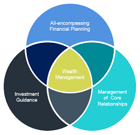
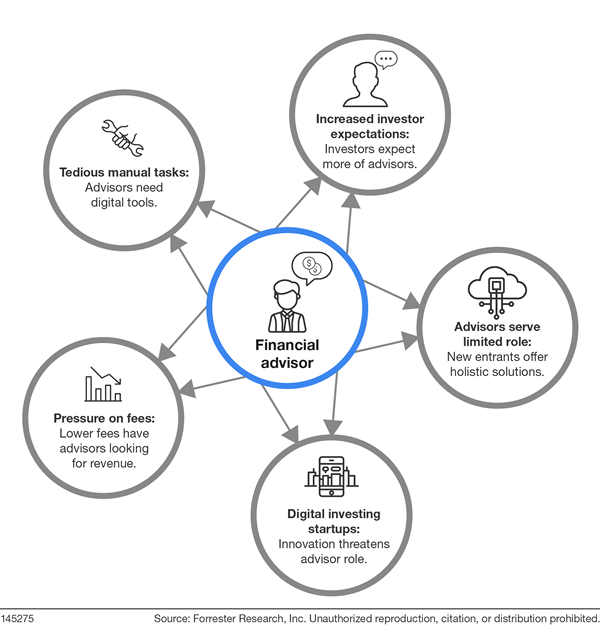
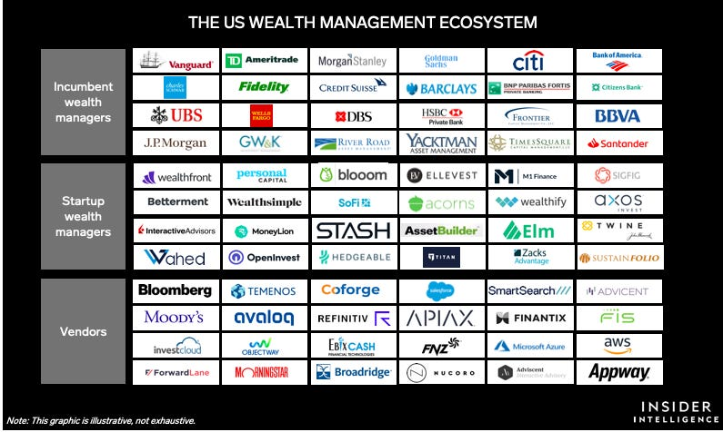
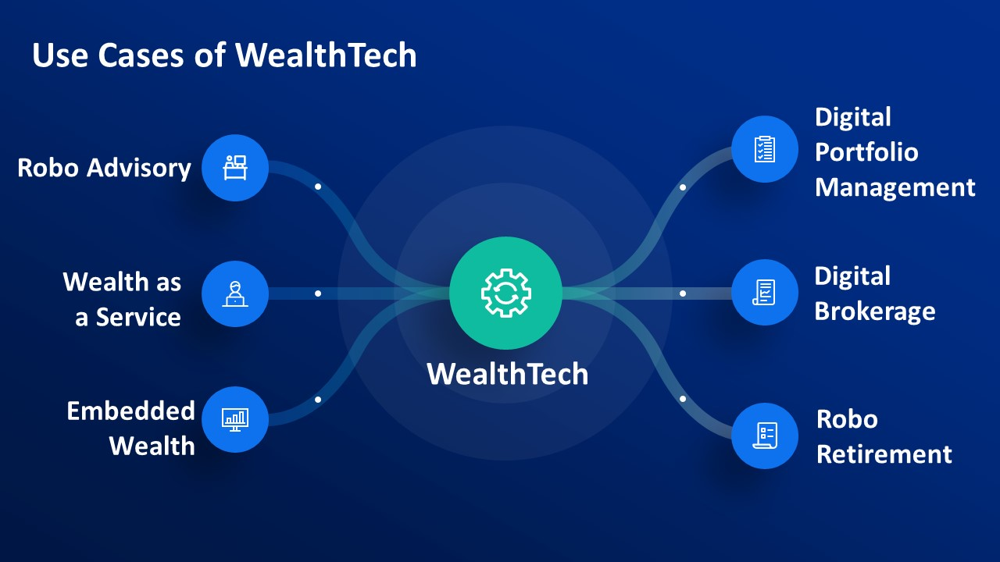

Introduction
Since the 1980’s technology has been evolving around the globe. A forward movement for almost every sector exploring and exploiting the global market. Unlike E-commerce, online banking, logistic management, and Wealth management need better solutions in terms of monitoring their operations and tools to solve the disruptions running around. With the fintech tools and solutions evolving around, the market also scaled up to $121.5 billion by 2020 from a $20 billion market in 20215. Fintech in Wealth management is also surging demand.
Leaving the traditional managerial roles, Fintech assists wealth managers in terms of professional financial services, investment advice, financial planning, and a lot more. Here I get to discover how wealth managers are benefited in the process and the impact of Fintech in Wealth management.
Wealth Management - Impact Of Fintech
In the 70’s no proper regulatory commissions were leading to high brokerage. Later in the ’80s and ’90s brought in mutual fund concepts and online trading barged in with the internet. And the present 2000 was a scenic emergence of Artificial intelligence, robo-advisors, automated investment modules, and many more immuning to provide better predictions that are almost accurate.
In terms of wealth and financial advisories, demanding technological inputs, now rely on fintech that's backing it like never before. Fintech in Wealth management has eliminated the complexity and navigated investors to meet their goals. With flexible advisors, this technological upgradation was successful and convenient to prove their capabilities effectively.
Fintech not only contributed the best for wealth management as an industry but to all those operating in it. Advisors, managers, and operators are flexible and productive in the meantime. The Registered Investment Advisory renowned study report from Charles Schwab states that there is a steady growth in asset management in recent years.
Practical Applications and Adaptations Of Fintech In Wealth Management
- Reducing operational costs,
- Personalized solutions to clients,
- Instant responsive Robo advisors,
- The interactive interface that hosts individuals,
Fintech solutions have provided a better opportunity in managing and maintaining in every sector. Wealth management is also covered here. With the potential to effectively track down the wealth flow via AI invested in the new age technologies, it's a boom! Helping industries and managers to provide personalized, instant solutions to the receivers and distinguish themself in their niche. Also facilitates client-specific needs. Adding new efficiency in operations, easy management opportunities, and Fintech in wealth management help wealth managers to scale up their businesses more effectively. With wider opportunities, fintech opened a space to dynamic approaches that gave hands in many ways for the growth of the industry.

Impact Of Fintech On Wealth Management
Fintech being a maturing technology of the day is more functional and effective in terms of automating and improving in terms of better use of financial services. The driving innovation is shaping the asset and wealth management industry inmore creativelyFrom the active participation, the surveys, and the research conducted the impact of Fintech in wealth management is huge. Nearly witnessing a 300% increase in the active wealth management industry.
This quick adaptation also has a crucial impact on the working of the current financial model making Wealth Tech very important. With the opportunities to render selective algorithms to choose investment schemes, live robo-chat service assistance, and customized advisory with 24/7 support - the future seems to be very convenient for the users. Moreover, the collaboration of human advice and technological innovations is making room for a user-friendly interface, and as this gets common it implies cost-effective operations.
As small scaled wealth managers focus to render effective solutions opt for reporting tools rendering similar results. With active tools, chatbot, cost-cutting, and time management in complex situations, it's a win-win for both. It also contributes to better risk analysis and creates self-investment opportunities. Wealth tech has proved to show remarkable improvements in the business and wealth managers see evident scaling spaces in the business more cost-effectively.
To consider cost-effectiveness in Wealth management, the population of millennials forms the 50% ratio in the global workforce. Their minds are behind innovative strategies that cut down pressure and contribute to better, effective, and efficient functioning. As micro-investments open the possibility to generate better savings by eliminating huge service fees and entering with low investment via tech support. Paving the roadmap for better implementations and deconstructing traditional wealth management instead re model with fintech and new generation applications.

Step Ahead Of Traditional Welfare Management
It's obvious the speed and magnitude of Fintech are creating a massive impact on traditional wealth management operations that are having alter effects on the industry and their abilities. They show a much positive upscaling over time. WiConcerninghe the demand in terms of access, improved user experience, transparency, fee structures, personalized solutions, receiving dedicated services, and more. The answer undoubtedly marked the importance of FinTech. And the solution is simply streamlined through three simple deliverables.
Customizable platforms
Customizable platforms are digital offices for clients to interact with wealth managers. A customized platform or Fintech tool can make it possible for users to easily choose their preferences and get assistance instantly for the same. A dashboard feed with all information can give solutions to requirements.
By 2026 the market per capita or the size is expected to rise from $10.21 billion to $1$13.3 billionAn engaging online platform increases visibility in the global market and at the same time cuts down operational costs, which reflects low service fees.
Live Assistance
With the advance of live chatbots, they depend on human interaction to an extent while interacting with advisors and clients to deliver highly sophisticated advice in managing their wealth. These robo-advisors act with relevance to human interaction with clients and advisors. And much induced in rendering proper financial advice with the help of machine learning and artificial intelligence.
They share a huge insight and understanding of the receiver better, forecasting almost accurate predictions and suggestions for both psychographic and demographic questions. From the present usage of live assistance by 2027 it is anticipated to increase 9 times more and also get better. With the idea of being available anytime, Robo-advisors are becoming more common and their low-cost operations are highly benefiting the fintech industry in a massive space. To involve in better-strategized investments, the clients prefer these options to analyze effectively. This broadens the market space and opens up an increased user base. Personalization is its key hitting on the mind to depend on Fintech in Wealth management.
Mobilized Managements
So far it's admitted that most people admit to not showing much reverence and importance to increasing debt, living expenses, managing financial goals, and more. But with the advent of Fintech managers in the scene, the process becomes way more simple and more convenient. And many Wealth management companies opt for Fintech solutions to benefit everyone. WiAobilized money management tools to automate budgeting, monitor financial transactions, analyze performances and many others are simplified.
Depending on the new age technologies take the standards of the industry to a higher notion, increasing trust as the support and service lay on perfect notes. The viewing and tracking features help clients compare their portfolios for the market and make relevant changes via smart tools that are available. In terms of user convenience, sophistication, personalization, and automation Mobile management applications take a stand ahead in this modern world over traditional practices with 24/7 assistance.
They are the key technological factors that combined to transform the demographic shift of wealth. With rapid digitalization, there is observed an evident shift in customer movement in the democratization of investments, a rise in everyday investors, and easy adoption.

Use Cases Of FinTech In Revaluating Wealth Management
The long tiring heading out purposes is completely shut down now, people need not step out, Fintech with digital implementation. Everything is in a single tap. The modern functionalities are more simplified and easy to use, it's also easy to adopt.
Meeting users' demands with FinTech in wealth management - advisories can contribute better to their professional needs. Check out this portion to explore the use cases of Wealth management in FinTech.
Analyse Data Better
Banks and Investing schemes are under high regulations, to verify and understand the clients a lot of data is required and needs to be maintained. Involving AI and ML Fintech tools to manage this heavy data, makes it easily accessible and also quick to analyze.
Therefore helping businesses understand their clients and customers better, their behavior, preferences, investment patterns, credit scores, eligibility, and much more, defined real quick. Eventually facilitates you to provide better customer support and personalized experience, and all of this gives you an extra edge over the competitors in the market.
Shutting Overhead pressure
For those who audit wealth management in the old-school method, calling their customers individually, giving updates on financial patterns to clients who walkintonee the office every time. We can end this just like that. Using Fintech tools in wealth management by saving a lot of time, and overhead costs, you could also render productive services to much more clients.
From auditing, investment queries, statuses, financial advisees, and every other thing, a single dashboard can help your clients access it with ease. And a chatbot to assist via the application. Hereby the financial advice required is given and at the same time, the transactions head without any intermediaries. The team size and the number of engagements are also cut down. Automating repetitive tasks, Fintech tools make it more personalized and valuable for their clients.
Improved Customer Convenience
A lengthy onboarding process but the user's interest in the initial stage, keeping it sleek and minimal makes things quick and simple. To increase your client's trust and retention this year, bringing the finest Fintech abilities is the right choice. Thereby improving your services, and making wealth management convenient for customers.
Minimalizing Acquisition Cost and Time
The main drawback of wealth management firms that's a barrier to their expansion is the high acquisition cost. A swift, clean smooth onboarding process can act down most of this. And here is where Fintech takes a heap in Wealthcare management. Instead of spending hours bringing files and documents, and then rectifying them, a digital dashboard can elevate the experience. And cut downs the maximum time involved in the process.
Scale Up Wealth Management Business
Giving wider client support via Fintech tools opens a new space of opportunities to discover the needs better. A lot of offline constraints are removed and the workload ob cut down. The right fintech tool for wealth management contributes to maximizing efficiency in the operation. With automated tasks, live chatbots give active advice, and much more encouraging new customers. Expanding your bandwidth, align with the future of wealth management.
Bring New Investors
The younger generation today is making the most of the economy's population. The old-school methods are not in their interest. And looking for new opportunities. They are more into AI, ML and other new technological capabilities. By adopting the trend, it's easy to catch the pulse of GenZ. By building trust among them on your business with Fintech in Wealth Management, it's for sure a hit and no more hustle.

Fintech In Wealth Management The Future Of Today
Welathtech, the emergence has provided enough evidence for the audience and the market to be the desirable future for Wealth management in the future. The sanest evidence is the digital adaptations that are happening in and around the ecosystem that not just demand but proved to be worth the adaptation. Wealth management with Fintech shall help the industry regulate and define via digital tools and manage clients effectively and sincerely.
To curate Fintech software for Wealth management is one of the coolest, most interesting, and most challenging stuff any developer would look up to. Sparkout, the house of innovation is full-on energy to serve your need in incorporating Fintech into your wealth management systems.
In a space that is daunting with huge data, needs accuracy, and efficiency, and yet operates at the minimum - Wealth Management opts for Fintech and adapting to WealthTech tools and applications, as the only refined solution.
Lead Project Manager
Sivabharathy is a technical architect, technology enthusiast, and voracious reader. His visionary perspective has earned him opportunities to work with innovative projects in the computer software industry. He is an expert in PHP, JavaScript, NodeJS, Angular, Ethereum, Web3, Product Development, and Teamwork.